① 最大制冷按键/温度调节旋钮
②
 出风模式按键
出风模式按键
③ 后风窗除霜、除雾按键
④ 空气外循环软按键
⑤ 风速调节旋钮/空调关闭按键
⑥ 空气内循环软按键
⑦ 前风窗除霜、除雾软按键
⑧A/C制冷按键
① 最大制冷按键/温度调节旋钮
②
出风模式按键
③ 后风窗除霜、除雾按键
④ 空气外循环软按键
⑤ 风速调节旋钮/空调关闭按键
⑥ 空气内循环软按键
⑦ 前风窗除霜、除雾软按键
⑧A/C制冷按键
① 自动空调按键/温度调节旋钮
②
出风模式按键
③ 后风窗除霜、除雾按键
④ SYNC同步按键
⑤ 风速调节旋钮/空调关闭按键
⑥ 内外循环按键
⑦ 前风窗除霜、除雾按键
⑧ A/C制冷按键
–空调系统也可以通过按下音响显示屏桌面上的空调信息，切换至空调系统控制界面进行空调控制。
–可在音响系统“系统设置→空调座椅→空调”界面对空调系统某些特有功能进行设置（AVNT主机车型）。
–可在音响系统“系统设置→空调设定→空调设置”界面对空调系统某些特有功能进行设置（AV主机车型）。
顺时针或逆时针旋转，升高/降低温度，温度调节每格变化为0.5℃。
在自动模式下(自动空调)*，当进入LO/HI时，系统将保持大风量送风状态运行。
–在自动模式下(自动空调)*，为了获得最为理想的车内温度，推荐设定温度为25.0℃，如有需要可以自行调节温度。
按A/C按键，按键灯点亮，空调系统开启制冷功能。
再次按A/C按键，按键灯熄灭，空调系统关闭制冷功能。
按下AUTO按键，按键灯点亮，空调系统开启自动模式。
操作旋钮或
按键，退出空调系统自动模式。
按下按键，按键灯点亮，空调系统开启最大制冷模式。
再次按下按键，按键灯熄灭，空调系统退出最大制冷模式，并回到开启最大制冷前的状态。
顺时针或逆时针旋转旋钮，风速增加或减少，风量调节每格变化为1挡。音响系统显示屏显示相应的风速等级。
在自动模式时（自动空调）*，为了使车内温度达到目标值，空调系统会自动控制风速。操作 旋钮，空调系统退出自动模式。
按下OFF按键，关闭空调系统。空调系统关闭后，可有效操作按键、按键、
、按键
、/按键而不开启空调系统；操作AUTO按键*、A/C按键、按键*、
按键、温度旋钮、风量旋钮可开启空调系统。
内循环
–按下按键，当按键指示灯点亮时，空气循环进入内循环模式。
–当车外空气质量差时，使用此模式防止车外空气进入车内，使车内空气形成内循环。
外循环
–按下按键，当按键指示灯熄灭时，空气循环进入外循环模式。
–当车外空气质量好时，使用此模式可使车外空气进入车内，保持车内空气的新鲜。
–按下按键，按键灯点亮时，空气循环进入内循环模式，当车外空气质量差时，使用此模式防止车外空气进入车内，使车内空气形成内循环。
–按下按键，按键灯点亮时，空气循环进入外循环模式，当车外空气质量好时，使用此模式可使车外空气进入车内，保持车内空气的新鲜。
– 长时间的车内空气循环状态会使车内二氧化碳积累，不利于驾驶员保持清醒状态。
–在寒冷或下雨的天气使用车内空气循环容易导致车窗起雾，影响驾车视线，这可能会导致重大事故。
按下SYNC按键，按键指示灯点亮，空调系统进入单区控制模式。空调面板上的温度旋钮可以控制主副驾两侧的温度。
再点击SYNC按键，按键指示灯熄灭，空调进入双区控制模式，左侧区域及右侧区域温度独自控制。
- 点击“同步”软按键①，软按键灯熄灭，表示空调系统进入双区控制模式。左侧区域及右侧区域温度独自控制。
- 点击“同步”软按键①，软按键灯点亮，表示空调系统退出双区控制模式，进入单区控制模式，整车区域温度同时控制。
按下按键，按键灯点亮，开启前风窗除霜、除雾功能。
再次按下 按键，按键灯熄灭，关闭前风窗除霜、除雾功能，并且回到除霜、除雾动作前的状态；或按下AUTO按键*，进入自动模式，也可以关闭前风窗除霜、除雾功能。
– 当温度设定在最冷时，使用除霜、除雾功能可能会引起风窗玻璃外侧起雾，影响驾车视线，这可能会导致重大事故。当使用除霜功能时，建议将温度设定到热或暖的位置。
– 当使用除霜、除雾功能时，如果手动关闭空调制冷功能，会引起前风窗玻璃起雾，影响驾车视线，这可能会导致重大事故。
– 当使用除霜、除雾功能时，为快速除霜、除雾，默认风量5档以上，出风口噪音较大，若希望减小噪音在保证驾驶视线的前提下可以手动将风量调小。
按下/按键，按键灯点亮，开启后风窗除霜、除雾功能，电加热后风窗及外后视镜*。
再次按下/按键，按键灯熄灭，关闭后风窗除霜、除雾功能。如果不手动关闭后风窗除霜、除雾功能，该功能持续工作15分钟后自动关闭。
– 在没有启动车辆的情况下，长时间使用后风窗除霜功能可能会使电池电压过低，导致无法启动车辆。
按下按键，可以按下列几种出风模式循环切换：
– 吹脚并吹前窗模式：空气从前风窗除霜出风口与脚部空间出风口吹出。
–
吹前窗模式：空气从前风窗除霜出风口吹出。
– 吹脸模式：空气从仪表板出风口吹出。
– 吹脚模式：空气从脚部空间出风口吹出。
–
 吹脸并吹脚模式：空气从仪表板出风口与脚部空间出风口吹出。
吹脸并吹脚模式：空气从仪表板出风口与脚部空间出风口吹出。
在自动模式时（自动空调）*，空调系统会自动控制出风模式。当需求出风温度较高时，空气将大部分吹向脚部；当需求出风温度较低时，空气将大部分吹向脸部。当操作
–为确保空调系统能有效自动控制所有出风模式，请将车内的各个出风口都处于打开状态。
–冬天冷启动下，自动模式会控制出风模式从吹前窗模式并开始逐渐过渡。

音响系统切换到空调系统控制界面，点击“场景”软按键进入空调场景界面。
1.预设场景1
– 速冷：18°C，AUTO：开，空调曲线为快速，急速降温，直到达到目标温度。
2.预设场景2
– 速暖：28°C，AUTO：开，空调曲线为快速，急速升温，一直维持最高功率，直到达到目标温度。
3.场景自定义
– 用户可根据需要将当前的空调状态或自定义空调状态添加为自定义场景。
— 页面到底了 —